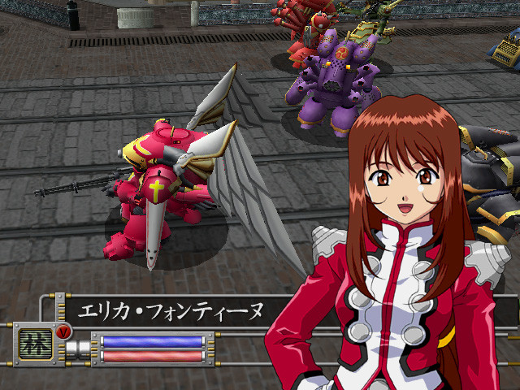

Game Mechanics & Tactical Systems
Every adventure conversation, Dreamcast analog input, and ARMS turn feeds directly into 恋愛度, 隊長値, and the final 大神華撃団 unit modifiers.
LIPS Dialogue Variants
Adventure scenes rely on LIPS prompts that adjust 恋愛度 and 隊長値, directly raising or lowering combat performance and deciding the Top-5 shortlist in 第三幕.
| Prompt Type | Dreamcast Input | Tactical Behavior |
|---|---|---|
| ノーマルLIPS | D-Pad and A Button | Select one of three replies before the steam timer drains, or let time expire for unique silent outcomes. |
| アナログLIPS | Dreamcast Analog Thumbstick Up or Down | Sets emotional strength across five tiers from 1 at the bottom to 5 at the top before confirming with A. |
| タイミングLIPS | Wait past half-gauge, then press A | Choices shift halfway through the bar, unlocking stronger replies for 李紅蘭, ソレッタ・織姫, and ロベリア・カルリーニ. |
| クリックLIPS | Move reticle and press A | Inspect eyes, mouth, hair, or props twice or three times, and click the empty background to trigger 結婚観. |
| セレクト | D-Pad and A Button | Untimed branch used for heroine photo selection, 結婚観 activation, and outing destinations. |
ARMS Battle Refinements
Movement, Actions & Narrow Alley Trick
- Action Point Ring. All fifteen playable units share 7 行動力 per turn, and every unit executes two actions such as Attack, Special Attack, ため, 防御, 回復, or かばう.
- Analog Narrow-Gap Passage. When street rubble pinches a lane in Tokyo stages, push forward while rapidly wiggling the Dreamcast analog thumbstick left and right so your 光武 edges past tight obstructions.
- Assist Attacks over Pair Ultimates. Instead of paired 合体攻撃, normal turns use proximity 協力攻撃 between compatible allies, while the finale shifts to the dual-seat 双武.
- Protect Stacking. Guarding an ally with かばう protects fragile casters such as アイリス and コクリコ while steadily raising their combat trust.

Captain Commands & Mid-Turn Swap
Only 大神一郎 switches 隊長コマンド freely during his turn without losing actions. Each stance alters attack, defense, mobility, and action AP costs across the whole squad.
- 風. Raises agility and movement efficiency for crossing large maps or reaching levers quickly.
- 林. Balanced command supporting steady defense and standard recovery access.
- 火. Maximizes attack power and minimizes AP cost for ため, while disabling 回復.
- 山. Maximizes defense and reduces AP costs for 防御 and 回復.
- Standard Boss Swap. On Ogami's turn, switch to 火 to execute ため or strike cheaply, then toggle to 山 before performing 防御 or 回復 so the whole team enters the enemy phase fortified.
Ogami Koubu Variants & Dual-Seat Soubu
Unlike サクラ大戦3, Captain EXP upgrades do not carry into サクラ大戦4. 大神一郎 pilots two fixed units across the campaign, while his final machine changes its Special Attack name and dialogue for all thirteen heroines.
| Unit | Availability | Base Stats | Combat Role |
|---|---|---|---|
| 光武二式（大神機） | Acts 1 & 2 | ATK 27 / DEF 18 / AP 7 | High-durability frontline dual-blade vanguard anchoring かばう and 隊長コマンド. |
| 双武 | Act 3 Final Battle | ATK 30 / DEF 14 / AP 7 | Two-seater unit co-piloted with the chosen Grand Heroine, unleashing heroine-specific 必殺攻撃 finishers. |
All 20 Ogami Combat Revue Squad Formations
Selecting your Grand Heroine plus four assault members in 第三幕 assigns one of twenty named 大神華撃団 formations on top of individual やる気 bonuses. Note that formation priority also checks recent LIPS choices when a five-woman lineup qualifies for multiple names.
| No. | Squad Name | Lineup Condition | ATK | DEF | AP | AGI |
|---|---|---|---|---|---|---|
| 1 | 花組 | Default fallback when no special set matches | +1 | +1 | +0 | +1 |
| 2 | 紅組 | Sakura, Kanna, Orihime, Erica, Coquelicot | +3 | +2 | +1 | +3 |
| 3 | 蒼組 | Sumire, Kohran, Reni, Glycine, Lobelia | +2 | +3 | +1 | +3 |
| 4 | 守組 | Includes Maria, Kohran, Erica, Hanabi | +0 | +3 | +1 | +2 |
| 5 | 戦組 | Includes Kanna, Reni, Glycine, Lobelia | +4 | +1 | +0 | +0 |
| 6 | 帝都組 | All 5 members from Tokyo Flower Division | +2 | +2 | +0 | +2 |
| 7 | 巴里組 | All 5 members from Paris Flower Division | +2 | +0 | +1 | +0 |
| 8 | 東洋組 | Any 5 from Sakura, Sumire, Kanna, Kohran, Coquelicot, Hanabi | +2 | +2 | +1 | +0 |
| 9 | 大人組 | Includes Maria, Kanna, Lobelia, excludes Iris, Reni, Coquelicot | +3 | +1 | +0 | +0 |
| 10 | ミニ組 | Includes Iris, Reni, Coquelicot, excludes Maria, Kanna, Lobelia | +0 | +1 | +1 | +3 |
| 11 | 綺羅星組 | Includes Orihime and Reni with one as Grand Heroine | +4 | +0 | +0 | +0 |
| 12 | 貴族組 | Sumire, Iris, Orihime, Glycine, Hanabi | +2 | +1 | +1 | +0 |
| 13 | 金銀組 | Maria, Iris, Reni, Glycine, Lobelia | +1 | +2 | +1 | +2 |
| 14 | ライバル組 | Includes Sumire, Kanna, Glycine, Lobelia | +3 | +2 | +0 | +2 |
| 15 | 桜組 | Includes Sakura and Erica as the Act 1 triangle pair | +1 | +1 | +1 | +2 |
| 16 | グルメ組 | Kanna, Iris, Kohran, Erica, Coquelicot | +0 | +2 | +1 | +0 |
| 17 | 道組 | Includes Sakura, Sumire, Glycine, Hanabi | +2 | +1 | +0 | +0 |
| 18 | おしゃれ組 | Includes Maria, Orihime, Reni, Lobelia | +1 | +2 | +0 | +0 |
| 19 | ギャグ組 | Includes Kohran, Erica, Coquelicot | +2 | +0 | +1 | +2 |
| 20 | 絶対正義組 | SW1/2/3 merged data, Ogami Solo Ending cleared, high 隊長値, and Top-5 high-morale squadmates | +9 | +9 | +0 | +2 |
Dreamcast VMU, Data Merge & Peripherals
Hardware Integration Specifics
- System & Story Saves. ビジュアルメモリ stores global unlock flags inside
SAKURA_4.SYS(3 blocks) and story saves asSAKURA_4.001onward (6 blocks each), displaying custom Sakura Wars LCD icons on the controller screen. - Retroactive Data Merge. データ合体 can be executed at any time, even after finishing a playthrough of サクラ大戦4, to fold newly cleared サクラ大戦, サクラ大戦2, or サクラ大戦3 heroine flags into
SAKURA_4.SYS. - Puru Puru Pack. Inserting a ぷるぷるぱっく provides tactile feedback during ARMS explosions, Koubu impacts, and theatrical cutscenes.
- Kinematron & Drama Download Heritage. While Dreamcast online network services for キネマトロン mail are offline, the Limited Edition packaged a bonus サクラ大戦3 Drama Download GD-ROM alongside the main game disc.